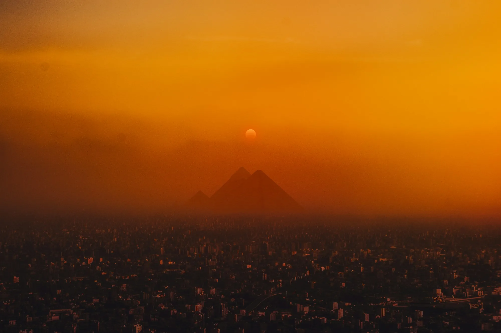
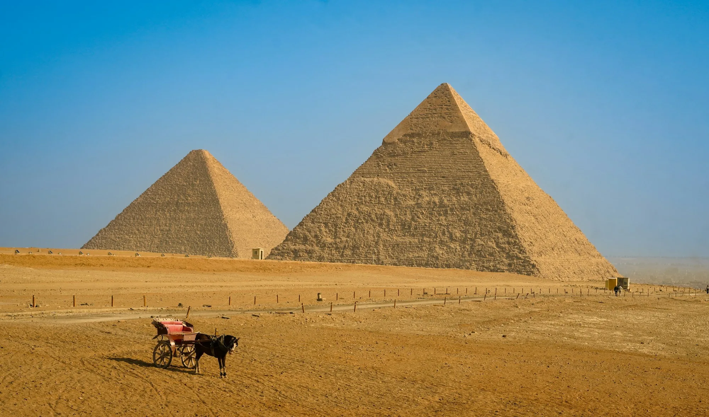
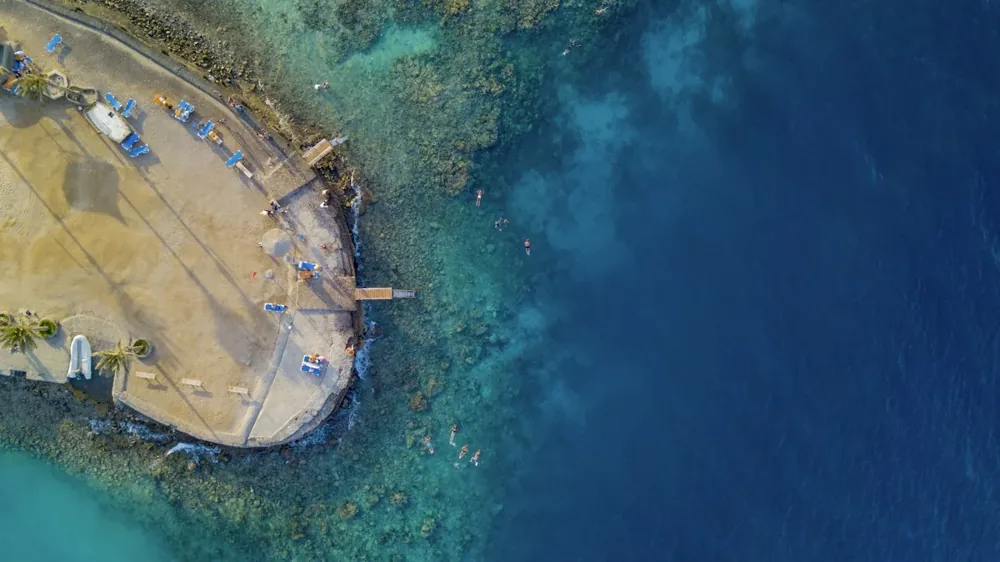
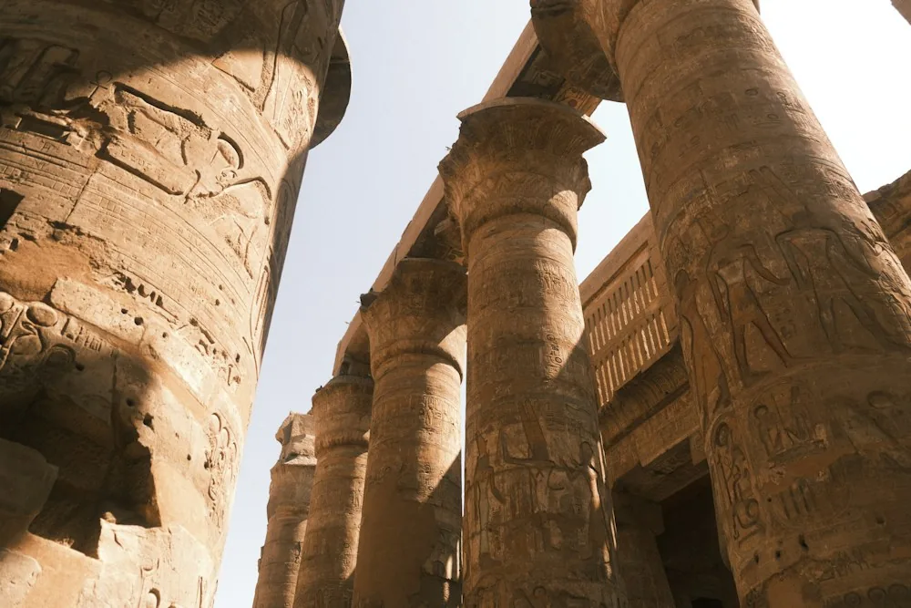
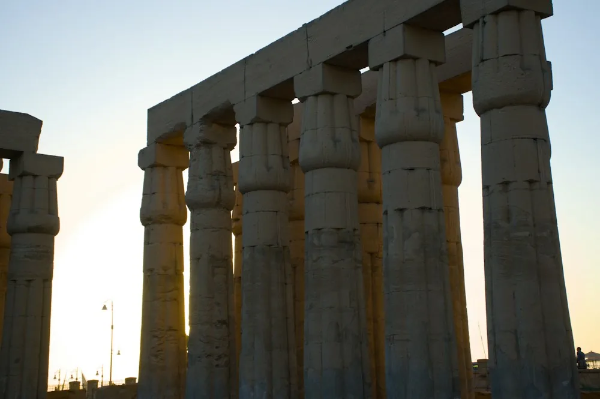
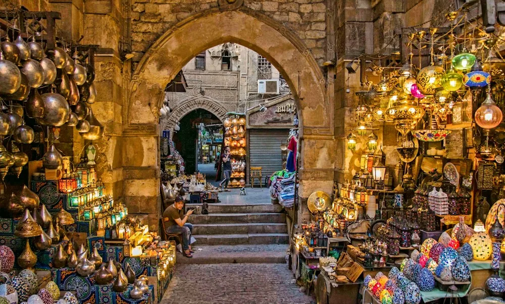
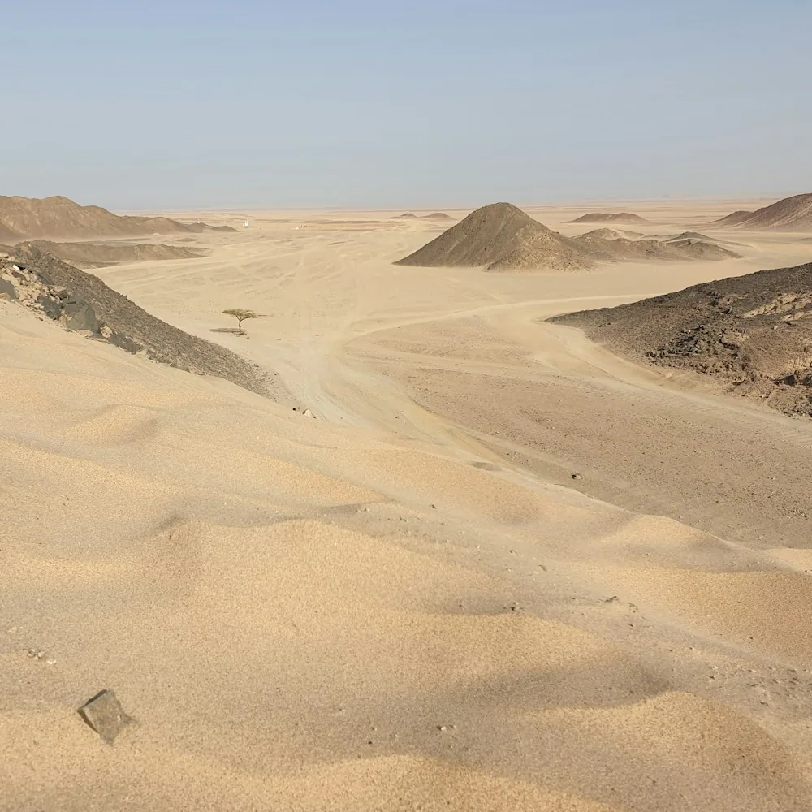
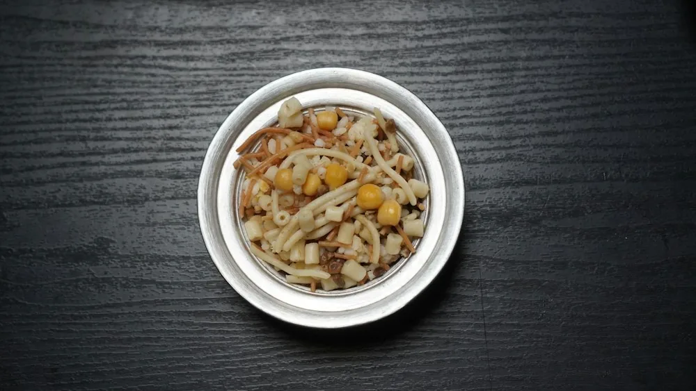

01
ЕГИПЕТ В ОБЪЕКТИВЕ
За кадром.
Фотографы, благодаря которым можно почувствовать атмосферу поездки ещё до вылета. Здесь собраны оригиналы снимков, имена авторов и условия использования.
Все фотографии размещены по Unsplash License. Для быстрой загрузки мы уменьшили их и сохранили в WebP. Фотографии показывают места и впечатления; конкретные отели и экскурсии ещё предстоит выбрать.

02
03Вид сверху на берег и кораллы Красного моря, Хургада
Фото: Bahaa Mourad

04
05
06 07
07

08
09Открытые инструменты
Manrope
Шрифт: The Manrope Project Authors. Лицензия SIL Open Font License 1.1. Шрифтовые файлы хранятся вместе с сайтом.
Leaflet 1.9.4
Библиотека интерактивной карты. Авторы: Volodymyr Agafonkin и участники проекта; CloudMade. Лицензия BSD-2-Clause.
OpenStreetMap
Данные карты: © участники OpenStreetMap, лицензия ODbL. Картографические изображения загружаются с серверов OpenStreetMap.
Лицензии фотографий, шрифта, библиотеки и картографических данных действуют отдельно. Проверка источников: 16 ноября 2026 года.